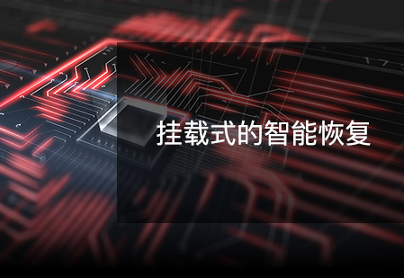

DBackup 始终坚持自主研发，产品技术上持续突破创新
精准的重复数据删除
海量文件高效保护
数据库全方位保护
虚拟平台智能保护
挂载式的即时恢复
支持备份云服务
支持本地到云端的协同
精准的重复数据删除

- 支持源端去重，减少备份业务在数据传输时对网络资源的占用。
- 支持目标端去重，减少备份业务在重复数据删除处理时对源端计算资源的占用。
- 集合了固定块和变长块的分割技术，对不同的备份目标类型提供了合适数据分块技术的选择。 采用变长块分割技术可以针对不同范围内的数据对象进行动态分块，使得数据块的匹配概率和效率更高，最大可达到99%的累积重删比。
- 采用指纹库分区存储技术，根据存储空间大小自动分割指纹库，避免单个指纹库过大产生性能瓶颈。
- 采用缓存驻留技术，及时清理缓存中过期文件，保障读写中的指纹库不被换出缓存，提高处理性能。
- 支持百亿量级的指纹库，支持90盘位一体机（裸存储容量约 540-720 TB）构建单个重删池，管理百亿条级别的指纹库。
海量文件高效保护
- 支持海量小文件，支持众多非结构化数据的物理备份，包括了档案（学校、图书馆）、图片（电商）、影像（医院）、账单（金融）、图纸（设计企业）等，文件数量却可达到百万、千万、亿万的级别。
- 数据精准去重，采用了变长块分割的重删技术，只针对变化的数据做分割处理，解决了固定块分割中把没任何变化的数据重新分块而导致去重率低的问题。
- 多通道并行备份，采用了文件索引与数据备份并行处理、多通道并行备份数据采集等技术手段，使备份效率呈倍数提高。
- 合成备份，文件合成备份可以支持任何平台和环境，解决了传统周期性“完全备份+增量备份”策略存在备份时间长、大量占用了客户端主机计算资源、I/O资源和网络资源、影响核心业务的正常运行等系列问题。
数据库全方位保护
- 逻辑备份，对数据库中表数据、代码的在线备份，可以选择整数据库表，或者一个或多个表来制定备份作业。
- 物理备份，提供完全备份、增量备份、日志备份等，通过定制作业策略来备份数据库的数据文件和日志文件。
- 连续日志实时保护，监控日志文件的变化，提供秒级别对变化日志数据的捕获和备份，在进行数据恢复时，可以填补了定时备份到故障点之间的缺失数据，实现RPO趋向于零，最大化减少数据损失。
- 合成备份，以物理备份为基础，结合数据库本身的特性技术，采用“初次全备+持续增备”的备份策略，在后台定时对全备数据和增备数据进行合并，缩短数据备份时间，降低带宽占用，以及减少备份数据占用存储空间。
- 集群备份，针对集群环境下数据库的备份，提供了集群节点的绑定，在数据库发生主从切换后，备份业务自动切换到活动节点上，保障备份作业持续执行。
虚拟平台智能保护
- 自动监测和备份，自动扫描虚拟平台中新增的虚拟机，发现后自动适配到已定制的备份作业中进行数据保护，无需依靠维护人员再定制备份策略。
- 数据精准备份，针对各种虚拟化平台采用变化块跟踪技术，准确发现变化的数据块并进行备份，减少冗余数据对存储空间的占用。
- 完整的备份类型，提供完全备份、增量备份、差异备份、合成备份等多种备份类型，支持在同一作业中完成对多种备份类型的组合配置，提高备份策略配置效率。
- 集群备份，针对虚拟化平台的集群环境，及时跟踪虚拟机漂移的当前位置，按预定策略执行数据备份，让虚拟机“无处可藏”。
挂载式的即时恢复

- 文件即时恢复，把文件备份时间点上的备份集或合成备份数据，虚拟成挂载卷，直接远程提供到客户端上读取，实现文件备份数据的即时恢复。
- 数据库即时恢复，读取数据库合成备份数据在指定时间点上的快照，加载到创建的块设备中，然后挂载到数据库服务器上为业务系统提供数据应急读写使用，实现数据库数据的即时恢复。
- 虚拟机即时恢复，创建数据虚拟卷，通过挂载方式把虚拟机备份数据接入到宿主机上，并在虚拟化平台中直接启动使用，实现虚拟机的即时恢复。
- Windows OS备份即时恢复，支持将 Windows 操作系统的备份数据直接转换为 VMWare、 KVM、 H3C 等虚拟平台支持的数据，通过挂载方式实现即时恢复。
支持备份云服务
- 共享同一套物理备份环境
- 根据租户备份容灾需求配置个性化业务
- 为每个租户配置独立存储空间，租户可自行管理。
- 租户数据私有管理，租户间互不干预
支持本地到云端的协同
- 共享同一套物理备份环境
- 根据租户备份容灾需求配置个性化业务
- 为每个租户配置独立存储空间，租户可自行管理。
- 租户数据私有管理，租户间互不干预